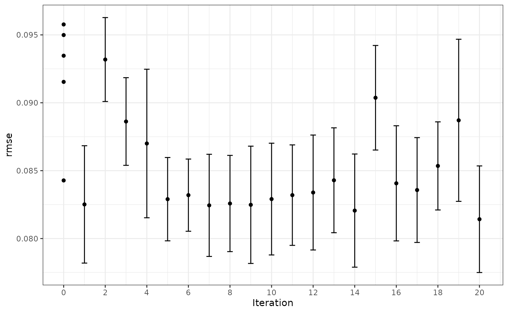

Introduction
The tune package helps optimize the modeling process. Users can tag arguments in recipes and model objects for optimization. The search routines in tune can discover these arguments and evaluate candidate values until a combination with good performance is found.
As an example, let’s model the Ames housing data:
library(tidymodels)
data(ames)
set.seed(4595)
data_split <- ames %>%
mutate(Sale_Price = log10(Sale_Price)) %>%
initial_split(strata = Sale_Price)
ames_train <- training(data_split)
ames_test <- testing(data_split)For simplicity, the sale price of a house will be modeled as a function of its geo-location. These predictors appear to have nonlinear relationships with the outcome:
ames_train %>%
dplyr::select(Sale_Price, Longitude, Latitude) %>%
tidyr::pivot_longer(cols = c(Longitude, Latitude),
names_to = "predictor", values_to = "value") %>%
ggplot(aes(x = value, Sale_Price)) +
geom_point(alpha = .2) +
geom_smooth(se = FALSE) +
facet_wrap(~ predictor, scales = "free_x")
#> `geom_smooth()` using method = 'gam' and formula = 'y ~ s(x, bs =
#> "cs")'
These two predictors could be modeled using natural splines in conjunction with a linear model. The amount of “wiggliness” in these splines is determined by the degrees of freedom. An appropriate value of this parameter cannot be analytically determined from the data, so it is a tuning parameter (a.k.a. a hyper-parameter). A common approach is to use resampling to estimate model performance over different values of these parameters and use these results to set reasonable values.
We can tag these parameters for optimization using the
tune() function:
ames_rec <-
recipe(Sale_Price ~ Gr_Liv_Area + Longitude + Latitude, data = ames_train) %>%
step_log(Gr_Liv_Area, base = 10) %>%
step_spline_natural(Longitude, Latitude, deg_free = tune())The package can detect these parameters and optimize them.
However, based on the plot above, the potential amount of non-linearity between the sale price and the predictors might be different. For example, longitude might require more flexibility than latitude. The recipe above would constrain the nonlinearity of the predictors to be the same. We can probably do better than that.
To accomplish this, individual step_spline_natural()
terms can be added to the recipe for each predictor. However, we want
these to be identifiable; using the same syntax as above, we can’t tell
the difference between the two deg_free parameters.
tune() has an option to provide a text annotation so
that each tuning parameter has a unique identifier:
ames_rec <-
recipe(Sale_Price ~ Gr_Liv_Area + Longitude + Latitude, data = ames_train) %>%
step_log(Gr_Liv_Area, base = 10) %>%
step_spline_natural(Longitude, deg_free = tune("long df")) %>%
step_spline_natural(Latitude, deg_free = tune("lat df"))The function extract_parameter_set_dials() can detect
and collect the parameters that have been flagged for tuning.
extract_parameter_set_dials(ames_rec)
#> Collection of 2 parameters for tuning
#>
#> identifier type object
#> long df deg_free nparam[+]
#> lat df deg_free nparam[+]The dials package has default ranges for many parameters. The generic
parameter function for deg_free() has a fairly small
range:
deg_free()
#> Degrees of Freedom (quantitative)
#> Range: [1, 5]However, there is a function in dials that is more appropriate for splines:
spline_degree()
#> Spline Degrees of Freedom (quantitative)
#> Range: [1, 10]The parameter objects can be easily changed using the
update() function:
ames_param <-
ames_rec %>%
extract_parameter_set_dials() %>%
update(
`long df` = spline_degree(),
`lat df` = spline_degree()
)
ames_param
#> Collection of 2 parameters for tuning
#>
#> identifier type object
#> long df deg_free nparam[+]
#> lat df deg_free nparam[+]Grid Search
Grid search uses a pre-defined set of candidate parameters and evaluates these using resampling. The basic ingredients are:
A grid of candidate values to evaluate.
One or more performance metrics for quantifying how well the model works.
A resampling scheme that can be used to appropriately measure performance (which could be a simple validation set).
To make the grid, a data frame is needed with column names matching
the “identifier” column above. There are several functions in dials to
created grids (named grid_*()). For example, a
space-filling design can be created by:
spline_grid <- grid_max_entropy(ames_param, size = 10)
#> Warning: `grid_max_entropy()` was deprecated in dials 1.3.0.
#> ℹ Please use `grid_space_filling()` instead.
#> This warning is displayed once every 8 hours.
#> Call `lifecycle::last_lifecycle_warnings()` to see where this warning was
#> generated.
spline_grid
#> # A tibble: 10 × 2
#> `long df` `lat df`
#> <int> <int>
#> 1 6 5
#> 2 7 1
#> 3 10 2
#> 4 3 1
#> 5 1 9
#> 6 9 6
#> 7 1 4
#> 8 3 7
#> 9 9 10
#> 10 5 9Alternately, expand.grid() also works to create a
regular grid:
df_vals <- seq(2, 18, by = 2)
# A regular grid:
spline_grid <- expand.grid(`long df` = df_vals, `lat df` = df_vals)Note that a 2-degree-of-freedom model is a simple quadratic fit.
There are two other ingredients that are required before tuning.
First is a model specification. Using functions in parsnip, a basic linear model can be used:
lm_mod <- linear_reg() %>% set_engine("lm")No tuning parameters here.
As mentioned above, a resampling specification is also needed. The Ames data set is large enough to use simple 10-fold cross-validation:
The root mean squared error will be used to measure performance (and this is the default for regression problems).
Using these objects, tune_grid() can be used1:
ames_res <- tune_grid(lm_mod, ames_rec, resamples = cv_splits, grid = spline_grid)
#> Warning: ! tune detected a parallel backend registered with foreach but no backend
#> registered with future.
#> ℹ Support for parallel processing with foreach was soft-deprecated in
#> tune 1.2.1.
#> ℹ See ?parallelism (`?tune::parallelism()`) to learn more.The object is similar to the rsample object but with one
or more extra columns:
ames_res
#> # Tuning results
#> # 10-fold cross-validation using stratification
#> # A tibble: 10 × 4
#> splits id .metrics .notes
#> <list> <chr> <list> <list>
#> 1 <split [1976/221]> Fold01 <tibble [162 × 6]> <tibble [0 × 4]>
#> 2 <split [1976/221]> Fold02 <tibble [162 × 6]> <tibble [0 × 4]>
#> 3 <split [1976/221]> Fold03 <tibble [162 × 6]> <tibble [0 × 4]>
#> 4 <split [1976/221]> Fold04 <tibble [162 × 6]> <tibble [0 × 4]>
#> 5 <split [1977/220]> Fold05 <tibble [162 × 6]> <tibble [0 × 4]>
#> 6 <split [1977/220]> Fold06 <tibble [162 × 6]> <tibble [0 × 4]>
#> 7 <split [1978/219]> Fold07 <tibble [162 × 6]> <tibble [0 × 4]>
#> 8 <split [1978/219]> Fold08 <tibble [162 × 6]> <tibble [0 × 4]>
#> 9 <split [1979/218]> Fold09 <tibble [162 × 6]> <tibble [0 × 4]>
#> 10 <split [1980/217]> Fold10 <tibble [162 × 6]> <tibble [0 × 4]>The .metrics column has all of the holdout performance
estimates2 for each parameter combination:
ames_res$.metrics[[1]]
#> # A tibble: 162 × 6
#> `long df` `lat df` .metric .estimator .estimate .config
#> <dbl> <dbl> <chr> <chr> <dbl> <chr>
#> 1 2 2 rmse standard 0.0980 Preprocessor01_Model1
#> 2 2 2 rsq standard 0.686 Preprocessor01_Model1
#> 3 4 2 rmse standard 0.0979 Preprocessor02_Model1
#> 4 4 2 rsq standard 0.687 Preprocessor02_Model1
#> 5 6 2 rmse standard 0.0966 Preprocessor03_Model1
#> 6 6 2 rsq standard 0.695 Preprocessor03_Model1
#> 7 8 2 rmse standard 0.0956 Preprocessor04_Model1
#> 8 8 2 rsq standard 0.701 Preprocessor04_Model1
#> 9 10 2 rmse standard 0.0954 Preprocessor05_Model1
#> 10 10 2 rsq standard 0.703 Preprocessor05_Model1
#> # ℹ 152 more rowsTo get the average metric value for each parameter combination,
collect_metrics() can be put to use:
estimates <- collect_metrics(ames_res)
estimates
#> # A tibble: 162 × 8
#> `long df` `lat df` .metric .estimator mean n std_err .config
#> <dbl> <dbl> <chr> <chr> <dbl> <int> <dbl> <chr>
#> 1 2 2 rmse standard 0.0998 10 0.00140 Preprocesso…
#> 2 2 2 rsq standard 0.678 10 0.00737 Preprocesso…
#> 3 4 2 rmse standard 0.0996 10 0.00149 Preprocesso…
#> 4 4 2 rsq standard 0.680 10 0.00772 Preprocesso…
#> 5 6 2 rmse standard 0.0987 10 0.00155 Preprocesso…
#> 6 6 2 rsq standard 0.685 10 0.00832 Preprocesso…
#> 7 8 2 rmse standard 0.0983 10 0.00155 Preprocesso…
#> 8 8 2 rsq standard 0.687 10 0.00898 Preprocesso…
#> 9 10 2 rmse standard 0.0985 10 0.00162 Preprocesso…
#> 10 10 2 rsq standard 0.686 10 0.00965 Preprocesso…
#> # ℹ 152 more rowsThe values in the mean column are the averages of the 10
resamples. The best RMSE values corresponded to:
rmse_vals <-
estimates %>%
dplyr::filter(.metric == "rmse") %>%
arrange(mean)
rmse_vals
#> # A tibble: 81 × 8
#> `long df` `lat df` .metric .estimator mean n std_err .config
#> <dbl> <dbl> <chr> <chr> <dbl> <int> <dbl> <chr>
#> 1 16 12 rmse standard 0.0948 10 0.00120 Preprocesso…
#> 2 18 12 rmse standard 0.0948 10 0.00121 Preprocesso…
#> 3 16 8 rmse standard 0.0949 10 0.00118 Preprocesso…
#> 4 16 10 rmse standard 0.0949 10 0.00118 Preprocesso…
#> 5 16 18 rmse standard 0.0949 10 0.00119 Preprocesso…
#> 6 16 16 rmse standard 0.0949 10 0.00122 Preprocesso…
#> 7 18 10 rmse standard 0.0949 10 0.00119 Preprocesso…
#> 8 18 8 rmse standard 0.0949 10 0.00119 Preprocesso…
#> 9 18 18 rmse standard 0.0950 10 0.00120 Preprocesso…
#> 10 16 14 rmse standard 0.0950 10 0.00117 Preprocesso…
#> # ℹ 71 more rowsSmaller degrees of freedom values correspond to more linear functions, but the grid search indicates that more nonlinearity is better. What was the relationship between these two parameters and RMSE?
autoplot(ames_res, metric = "rmse")
Interestingly, latitude does not do well with degrees of freedom less than 8. How nonlinear are the optimal degrees of freedom?
Let’s plot these spline functions over the data for both good and bad
values of deg_free:
ames_train %>%
dplyr::select(Sale_Price, Longitude, Latitude) %>%
tidyr::pivot_longer(cols = c(Longitude, Latitude),
names_to = "predictor", values_to = "value") %>%
ggplot(aes(x = value, Sale_Price)) +
geom_point(alpha = .2) +
geom_smooth(se = FALSE, method = lm, formula = y ~ splines::ns(x, df = 3), col = "red") +
geom_smooth(se = FALSE, method = lm, formula = y ~ splines::ns(x, df = 16)) +
scale_y_log10() +
facet_wrap(~ predictor, scales = "free_x")Looking at these plots, the smaller degrees of freedom (red) are clearly under-fitting. Visually, the more complex splines (blue) might indicate that there is overfitting but this would result in poor RMSE values when computed on the hold-out data.
Based on these results, a new recipe would be created with the optimized values (using the entire training set) and this would be combined with a linear model created form the entire training set.
Model Optimization
Instead of a linear regression, a nonlinear model might provide good performance. A K-nearest-neighbor fit will also be optimized. For this example, the number of neighbors and the distance weighting function will be optimized:
# requires the kknn package
knn_mod <-
nearest_neighbor(neighbors = tune(), weight_func = tune()) %>%
set_engine("kknn") %>%
set_mode("regression")The easiest approach to optimize the pre-processing and model parameters is to bundle these objects into a workflow:
From this, the parameter set can be used to modify the range and values of parameters being optimized3:
knn_param <-
knn_wflow %>%
extract_parameter_set_dials() %>%
update(
`long df` = spline_degree(c(2, 18)),
`lat df` = spline_degree(c(2, 18)),
neighbors = neighbors(c(3, 50)),
weight_func = weight_func(values = c("rectangular", "inv", "gaussian", "triangular"))
)This parameter collection can be used with the grid functions or with
tune_grid() via the param_info argument.
Instead of using grid search, an iterative method called Bayesian optimization can be used. This takes an initial set of results and tries to predict the next tuning parameters to evaluate.
Although no grid is required, the process requires a few additional pieces of information:
A description of the search space. At a minimum, the would consist of ranges for numeric values and a list of values for categorical tuning parameters.
An acquisition function that helps score potential tuning parameter values.
A model for analyzing and making predictions of the best tuning parameter values. A Gaussian Process model is typical and used here.
The code to conduct the search is:
ctrl <- control_bayes(verbose = TRUE)
set.seed(8154)
knn_search <- tune_bayes(knn_wflow, resamples = cv_splits, initial = 5, iter = 20,
param_info = knn_param, control = ctrl)
#>
#> ❯ Generating a set of 5 initial parameter results
#> Warning: ! tune detected a parallel backend registered with foreach but no backend
#> registered with future.
#> ℹ Support for parallel processing with foreach was soft-deprecated in
#> tune 1.2.1.
#> ℹ See ?parallelism (`?tune::parallelism()`) to learn more.
#> ✓ Initialization complete
#>
#> i Gaussian process model
#> ! The Gaussian process model is being fit using 7 features but only has
#> 5 data points to do so. This may cause errors or a poor model fit.
#> ✓ Gaussian process model
#> i Generating 4774 candidates
#> i Predicted candidates
#> i Estimating performance
#> Warning: ! tune detected a parallel backend registered with foreach but no backend
#> registered with future.
#> ℹ Support for parallel processing with foreach was soft-deprecated in
#> tune 1.2.1.
#> ℹ See ?parallelism (`?tune::parallelism()`) to learn more.
#> ✓ Estimating performance
#> i Gaussian process model
#> ! The Gaussian process model is being fit using 7 features but only has
#> 6 data points to do so. This may cause errors or a poor model fit.
#> ✓ Gaussian process model
#> i Generating 4770 candidates
#> i Predicted candidates
#> i Estimating performance
#> Warning: ! tune detected a parallel backend registered with foreach but no backend
#> registered with future.
#> ℹ Support for parallel processing with foreach was soft-deprecated in
#> tune 1.2.1.
#> ℹ See ?parallelism (`?tune::parallelism()`) to learn more.
#> ✓ Estimating performance
#> i Gaussian process model
#> ! The Gaussian process model is being fit using 7 features but only has
#> 7 data points to do so. This may cause errors or a poor model fit.
#> ✓ Gaussian process model
#> i Generating 4777 candidates
#> i Predicted candidates
#> i Estimating performance
#> Warning: ! tune detected a parallel backend registered with foreach but no backend
#> registered with future.
#> ℹ Support for parallel processing with foreach was soft-deprecated in
#> tune 1.2.1.
#> ℹ See ?parallelism (`?tune::parallelism()`) to learn more.
#> ✓ Estimating performance
#> i Gaussian process model
#> ! The Gaussian process model is being fit using 7 features but only has
#> 8 data points to do so. This may cause errors or a poor model fit.
#> ✓ Gaussian process model
#> i Generating 4766 candidates
#> i Predicted candidates
#> i Estimating performance
#> Warning: ! tune detected a parallel backend registered with foreach but no backend
#> registered with future.
#> ℹ Support for parallel processing with foreach was soft-deprecated in
#> tune 1.2.1.
#> ℹ See ?parallelism (`?tune::parallelism()`) to learn more.
#> ✓ Estimating performance
#> i Gaussian process model
#> ✓ Gaussian process model
#> i Generating 4786 candidates
#> i Predicted candidates
#> i Estimating performance
#> Warning: ! tune detected a parallel backend registered with foreach but no backend
#> registered with future.
#> ℹ Support for parallel processing with foreach was soft-deprecated in
#> tune 1.2.1.
#> ℹ See ?parallelism (`?tune::parallelism()`) to learn more.
#> ✓ Estimating performance
#> i Gaussian process model
#> ✓ Gaussian process model
#> i Generating 4792 candidates
#> i Predicted candidates
#> i Estimating performance
#> Warning: ! tune detected a parallel backend registered with foreach but no backend
#> registered with future.
#> ℹ Support for parallel processing with foreach was soft-deprecated in
#> tune 1.2.1.
#> ℹ See ?parallelism (`?tune::parallelism()`) to learn more.
#> ✓ Estimating performance
#> i Gaussian process model
#> ✓ Gaussian process model
#> i Generating 4776 candidates
#> i Predicted candidates
#> i Estimating performance
#> Warning: ! tune detected a parallel backend registered with foreach but no backend
#> registered with future.
#> ℹ Support for parallel processing with foreach was soft-deprecated in
#> tune 1.2.1.
#> ℹ See ?parallelism (`?tune::parallelism()`) to learn more.
#> ✓ Estimating performance
#> i Gaussian process model
#> ✓ Gaussian process model
#> i Generating 4771 candidates
#> i Predicted candidates
#> i Estimating performance
#> Warning: ! tune detected a parallel backend registered with foreach but no backend
#> registered with future.
#> ℹ Support for parallel processing with foreach was soft-deprecated in
#> tune 1.2.1.
#> ℹ See ?parallelism (`?tune::parallelism()`) to learn more.
#> ✓ Estimating performance
#> i Gaussian process model
#> ✓ Gaussian process model
#> i Generating 4773 candidates
#> i Predicted candidates
#> i Estimating performance
#> Warning: ! tune detected a parallel backend registered with foreach but no backend
#> registered with future.
#> ℹ Support for parallel processing with foreach was soft-deprecated in
#> tune 1.2.1.
#> ℹ See ?parallelism (`?tune::parallelism()`) to learn more.
#> ✓ Estimating performance
#> i Gaussian process model
#> ✓ Gaussian process model
#> i Generating 4744 candidates
#> i Predicted candidates
#> i Estimating performance
#> Warning: ! tune detected a parallel backend registered with foreach but no backend
#> registered with future.
#> ℹ Support for parallel processing with foreach was soft-deprecated in
#> tune 1.2.1.
#> ℹ See ?parallelism (`?tune::parallelism()`) to learn more.
#> ✓ Estimating performance
#> i Gaussian process model
#> ✓ Gaussian process model
#> i Generating 4753 candidates
#> i Predicted candidates
#> i Estimating performance
#> Warning: ! tune detected a parallel backend registered with foreach but no backend
#> registered with future.
#> ℹ Support for parallel processing with foreach was soft-deprecated in
#> tune 1.2.1.
#> ℹ See ?parallelism (`?tune::parallelism()`) to learn more.
#> ✓ Estimating performance
#> i Gaussian process model
#> ✓ Gaussian process model
#> i Generating 4782 candidates
#> i Predicted candidates
#> i Estimating performance
#> Warning: ! tune detected a parallel backend registered with foreach but no backend
#> registered with future.
#> ℹ Support for parallel processing with foreach was soft-deprecated in
#> tune 1.2.1.
#> ℹ See ?parallelism (`?tune::parallelism()`) to learn more.
#> ✓ Estimating performance
#> i Gaussian process model
#> ✓ Gaussian process model
#> i Generating 4789 candidates
#> i Predicted candidates
#> i Estimating performance
#> Warning: ! tune detected a parallel backend registered with foreach but no backend
#> registered with future.
#> ℹ Support for parallel processing with foreach was soft-deprecated in
#> tune 1.2.1.
#> ℹ See ?parallelism (`?tune::parallelism()`) to learn more.
#> ✓ Estimating performance
#> i Gaussian process model
#> ✓ Gaussian process model
#> i Generating 4789 candidates
#> i Predicted candidates
#> i Estimating performance
#> Warning: ! tune detected a parallel backend registered with foreach but no backend
#> registered with future.
#> ℹ Support for parallel processing with foreach was soft-deprecated in
#> tune 1.2.1.
#> ℹ See ?parallelism (`?tune::parallelism()`) to learn more.
#> ✓ Estimating performance
#> i Gaussian process model
#> ✓ Gaussian process model
#> i Generating 4775 candidates
#> i Predicted candidates
#> i Estimating performance
#> Warning: ! tune detected a parallel backend registered with foreach but no backend
#> registered with future.
#> ℹ Support for parallel processing with foreach was soft-deprecated in
#> tune 1.2.1.
#> ℹ See ?parallelism (`?tune::parallelism()`) to learn more.
#> ✓ Estimating performance
#> i Gaussian process model
#> ✓ Gaussian process model
#> i Generating 4763 candidates
#> i Predicted candidates
#> i Estimating performance
#> Warning: ! tune detected a parallel backend registered with foreach but no backend
#> registered with future.
#> ℹ Support for parallel processing with foreach was soft-deprecated in
#> tune 1.2.1.
#> ℹ See ?parallelism (`?tune::parallelism()`) to learn more.
#> ✓ Estimating performance
#> i Gaussian process model
#> ✓ Gaussian process model
#> i Generating 4784 candidates
#> i Predicted candidates
#> i Estimating performance
#> Warning: ! tune detected a parallel backend registered with foreach but no backend
#> registered with future.
#> ℹ Support for parallel processing with foreach was soft-deprecated in
#> tune 1.2.1.
#> ℹ See ?parallelism (`?tune::parallelism()`) to learn more.
#> ✓ Estimating performance
#> i Gaussian process model
#> ✓ Gaussian process model
#> i Generating 4758 candidates
#> i Predicted candidates
#> i Estimating performance
#> Warning: ! tune detected a parallel backend registered with foreach but no backend
#> registered with future.
#> ℹ Support for parallel processing with foreach was soft-deprecated in
#> tune 1.2.1.
#> ℹ See ?parallelism (`?tune::parallelism()`) to learn more.
#> ✓ Estimating performance
#> ! No improvement for 10 iterations; returning current results.Visually, the performance gain was:
autoplot(knn_search, type = "performance", metric = "rmse")
The best results here were:
collect_metrics(knn_search) %>%
dplyr::filter(.metric == "rmse") %>%
arrange(mean)
#> # A tibble: 23 × 11
#> neighbors weight_func `long df` `lat df` .metric .estimator mean
#> <int> <chr> <int> <int> <chr> <chr> <dbl>
#> 1 11 triangular 9 8 rmse standard 0.0821
#> 2 7 triangular 8 7 rmse standard 0.0823
#> 3 15 triangular 7 7 rmse standard 0.0824
#> 4 10 inv 8 8 rmse standard 0.0826
#> 5 11 inv 6 8 rmse standard 0.0827
#> 6 11 triangular 2 6 rmse standard 0.0830
#> 7 14 triangular 8 9 rmse standard 0.0832
#> 8 5 inv 2 6 rmse standard 0.0836
#> 9 3 rectangular 6 6 rmse standard 0.0843
#> 10 29 inv 7 6 rmse standard 0.0858
#> # ℹ 13 more rows
#> # ℹ 4 more variables: n <int>, std_err <dbl>, .config <chr>, .iter <int>With this intrinsically nonlinear model there is less reliance on the nonlinear terms created by the recipe.